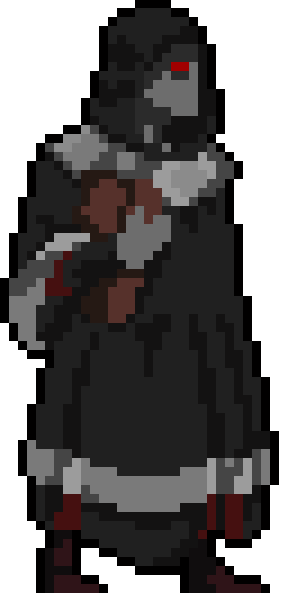
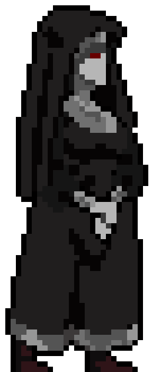

Chefe 1: Rei Palido
Um antigo governante corrompido pelas sombras. Ele representa o ego e arrogancia nos primeiros anos de carreira de Mauricio onde demonstra sua parte mais má e sombria. Sendo um Espectro de um caso aonde um líder de tráfico se vestia de Rei e comandava de forma tiranica uma favela.
Chefe 2: AsseMoth
Um Demônio Gigante acorrentado por correntes, representa os medos mais profundos de Mauricio, sendo a representação de uma investigação de assasinato nos anos 90 onde um homem de porte obeso, assasinou e matou diversar mulheres arrancando o coração .
Chefes 3: Culto dos Desolados

Lobo II
Muciber
Lilit
Seres Espectrais que se disfarçam de padres e madres. Eles representam a parte religiosa de Mauricio, onde possui um conflito sombrio que se une a parte da discrença dele sobre a igreja. Também se inspiradando num caso onde uma ceita religosa que doutrinava crianças de maneira abusiva e letal.
Chefe Final: Muck
O Maior Serial Killer que entrou na vida de Mauricio. Unico ser que realmente existiu na vida real, um homem frio e cruel, fazia de tudo para atormentar Mauricio onde segundo as próprias palavras dele, era o maior inimigo de Muck. Um homem tão assustador e mal que vez Mauricio mata-lo, fazendo a memória de Mauricio se estilhacar